Linear Algebra
&
Engineering Mathematics 1
Week 9 - Probability II
Quick recap of terminology
- Experimental probability (🎲🪙🔍👀 ➡️ 📊📈)
- Theoretical probability
- Sample space & Event: Event = $A,\;$ Probability of $A:$ $P(A)$
- Mutually exclusive events: $P(A \text{ or } B)= P(A) + P(B)$
- Not mutually exclusive: $P(A \text{ or } B)= P(A) + P(B) - P(A \text{ and }B)$
- Complementary events: $P(A)+P(A')=1$
- Independent & Not independent events
- Conditional probability:
Quick recap of terminology
- Combinatorics
- Permutations of $n$ distinct objects (every object is used, the order matters): $$\large n!$$
- Permutations of selecting $r$ things from $n$ distinct objects (order matters): $$\large ^nP_r = \dfrac{n!}{(n-r)!}$$
- Combinations of selecting $r$ things from $n$ objects (order does not matter): $$\large ^nC_r=\frac{^nP_r}{r!} = \frac{n!}{r!(n-r)!} $$
A couple of applications of conditional probability
| Medical Diagnosis | Weather Forecasting |
|---|---|
|
What is the probability that the
person actually has a
disease given a positive test result?
😀🤪😷😉🤒🤠🤧😋 |
Meteorologists use past data 📊📈 to update
rain probabilities
based on current conditions
like humidity, cloud cover, or wind direction. 🌧️🌤️☀️🌦️⛈️ |
Problem: Medical Diagnosis
Scenario: A patient receives a positive result on a test for a rare disease 😷.
Let's say the disease affects 1 in 1,000 people (0.1%), and the test is 99% accurate (i.e., 99% true positive rate and 1% false positive rate).
Question: What is the probability that the person actually has the disease given a positive test result?
Problem: Medical Diagnosis
Scenario: A patient receives a positive result on a test for a rare disease 😷.
Let's say the disease affects 1 in 1,000 people (0.1%), and the test is 99% accurate (i.e., 99% true positive rate and 1% false positive rate).
Question: What is the probability that the person actually has the disease given a positive test result?
| 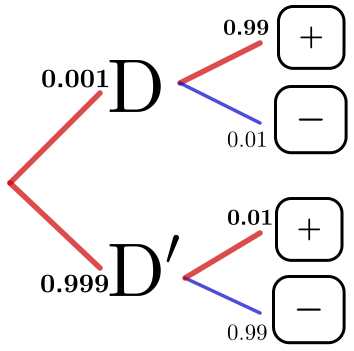 |
$ \left. \begin{array}{r} P(\text{D and +}) = 0.001 \times 0.99 = 0.00099\\ P(\text{D' and +}) = 0.999 \times 0.01 = 0.00999 \end{array} \right\} P(+) \left\{ \begin{array}{l} \text{total prob. of a}\\ \text{positive result} \end{array}\right. $ Prob. of having the disease given a positive test result $P(\text{D}\, | \,+ ) = \dfrac{P(\text{D} \text{ and } +)}{P(+)}= \dfrac{0.00099}{0.01098}\approx 9\%$ |
Problem: Medical Diagnosis
Scenario: A patient receives a positive result on a test for a rare disease 😷.
Let's say the disease affects 1 in 1,000 people (0.1%), and the test is 99% accurate (i.e., 99% true positive rate and 1% false positive rate).
Question: What is the probability that the person actually has the disease given a positive test result?

Problem: Medical Diagnosis
Scenario: A patient receives a positive result on a test for a rare disease 😷.
Let's say the disease affects 1 in 1,000 people (0.1%), and the test is 99% accurate (i.e., 99% true positive rate and 1% false positive rate).
Question: What is the probability that the person actually has the disease given a positive test result?
Remark: We used the formula:
\(P(D|+ ) = \dfrac{P(D \text{ and } +)}{P(D \text{ and } +) + P(D'\text{ and }+)}\)
\(= \dfrac{P(+|D) \cdot P(D)}{P(+)}\quad\)
Replace $D$ for $B$ and $+$ for $A:$
\(P(B|A)= \dfrac{P(A|B) \cdot P(A)}{P(B)}\)
Bayes' Theorem
⭐️ \(P(B|A)= \dfrac{P(A|B) \cdot P(A)}{P(B)}\) ⭐️
Thomas Bayes (1701-1761) english statistician and philosopher.
Multiply applications in science:
Medical Diagnosis, Machine Learning, Spam Filtering,
Forensic Science, Weather Forecasting.
Monty Hall Game
What is the probability of winning, if you keep your first choice?
What is the probability of winning, if you switch doors?
Monty Hall Game
 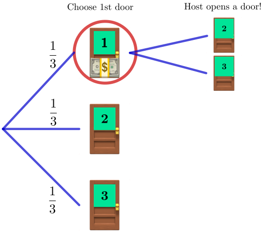
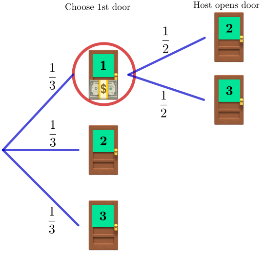
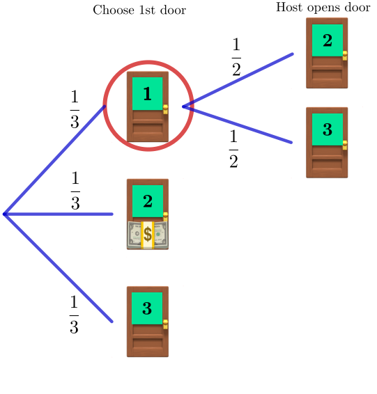
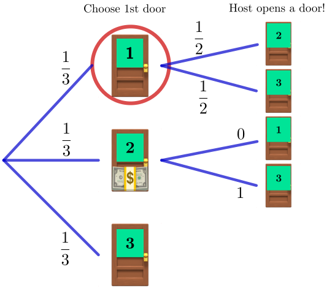
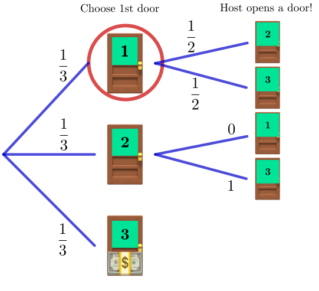
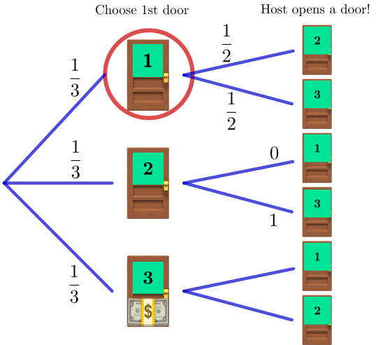
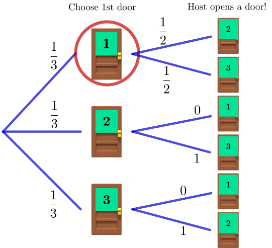
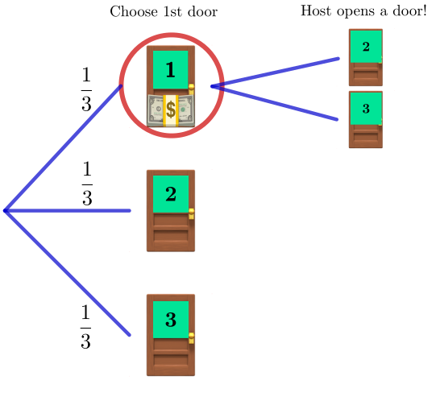
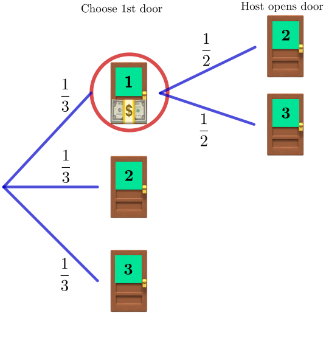
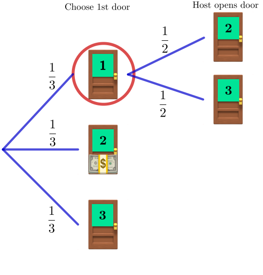
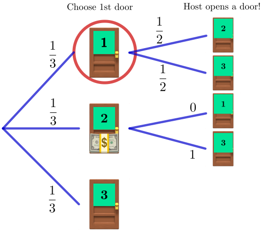
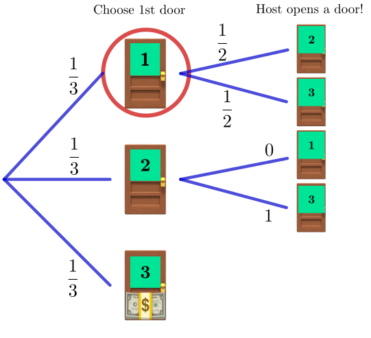
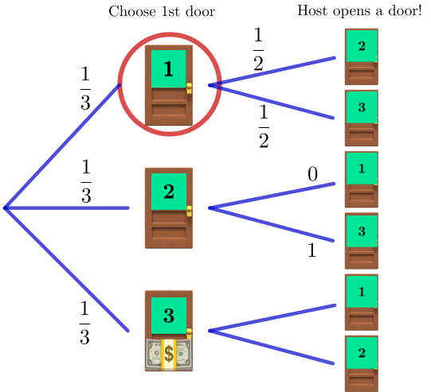
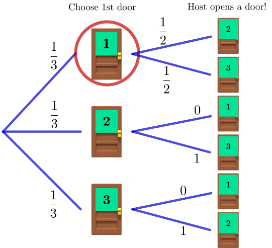
Probability distributions
Consider tossing 3 coins 🪙: We are interested in the number of heads.
\[ \big\{\text{TTT, TTH, THT, HTT, THH, HTH, HHT, HHH}\big\} \]
| Number of Heads ($k$) | 0 | 1 | 2 | 3 |
| $P(X=k)$ | $\frac{1}{8}$ | $\frac{3}{8}$ | $\frac{3}{8}$ | $\frac{1}{8}$ |
Probability distributions


 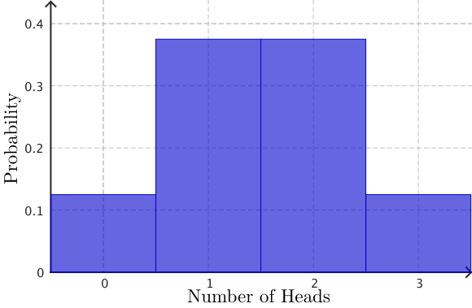
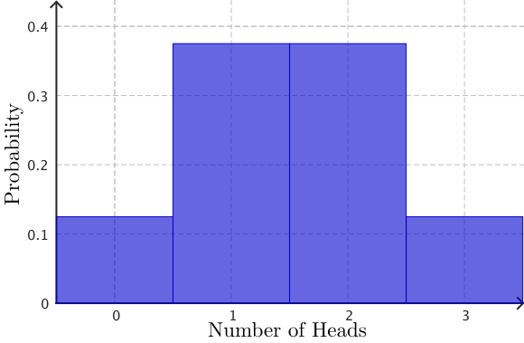
| Number of Heads ($k$) | 0 | 1 | 2 | 3 |
| $P(X=k)$ | $\frac{1}{8}$ | $\frac{3}{8}$ | $\frac{3}{8}$ | $\frac{1}{8}$ |
Probability distributions
| Number of Heads ($k$) | 0 | 1 | 2 | 3 | 4 | 5 |
| $P(X=k)$ | $\frac{1}{32}$ | $\frac{5}{32}$ | $\frac{10}{32}$ | $\frac{10}{32}$ | $\frac{5}{32}$ | $\frac{1}{32}$ |
Probability distributions
|
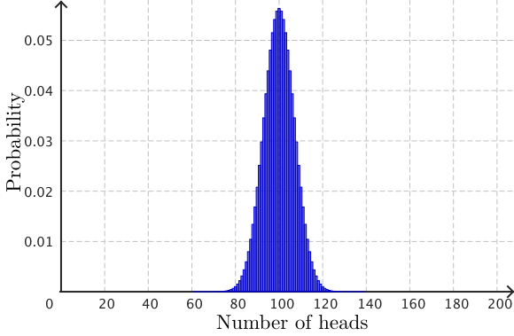
Tossing 200 coins |
|
Binomial Distribution
$P(X=k)$ $=$ $^nC_k $ $p^{\,k}$ $(1-p)^{n-k}$
Binomial Distribution
$P(X=k)$ $=$ $^nC_k $ $p^{\,k}$ $(1-p)^{n-k}$
Tossing 3 coins 🪙: What is the probability of getting 2 Heads?
$\text{H, H, T}$
$\text{H, T, H}$
$\text{T, H, H}$
$P(X=2)=$ $P(2 \text{ Heads})$ $=$ $^3C_2$ $p^{\,2}$ $(1-p)^{3-2}\qquad\quad$
$=\dfrac{3!}{2!(3-2)!}p^{\,2}(1-p)^{3-2}$ $=\dfrac{3!}{2!(3-2)!}\left(\dfrac{1}{2}\right)^2\left(1-\dfrac{1}{2}\right)^{3-2}$
$=3 \left(\dfrac{1}{4}\right)\left(\dfrac{1}{2}\right)$ $=\dfrac{3}{8}\qquad\qquad\qquad\qquad\quad\qquad\qquad\;\;$
| Number of Heads ($k$) | 0 | 1 | 2 | 3 |
| $P(X=k)$ | $\frac{1}{8}$ | $\frac{3}{8}$ | $\frac{3}{8}$ | $\frac{1}{8}$ |
Binomial Distribution: Key points
A binomial experiment posses the following properties:
- Fixed number of trials ($n$): The experiment consists of a set number of repeated trials.
- Only two possible outcomes per trial: Each trial results in a success or failure.
- Constant probability of success ($p$): The probability of success is the same on every trial.
- Independent trials: The outcome of one trial does not affect the others.
The binomial distribution models the number of successes in the $n$ trials.
Binomial Distribution: Key points
⭐️ $P(X=k)$ $=$ $^n C_k p^{\,k} (1-p)^{n-k}$ ⭐️
Statistical Analysis
The sum of two dice 🎲🎲
Statistical Analysis
The sum of two dice 🎲🎲: $2000$ trials
|
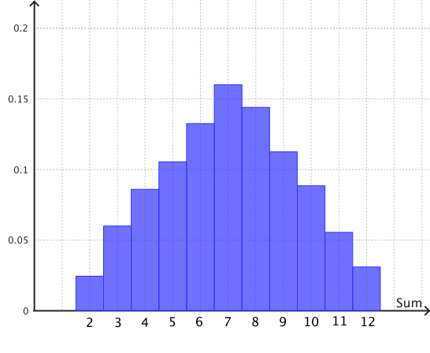
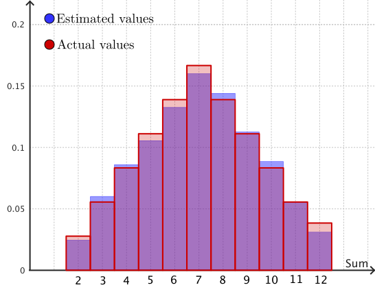
|
Statistical Analysis
| Sum ($k$) | $P(X = k)$ | $k \cdot P(X=k)$ | $k - \bar{x}$ | $\left(k - \bar{x}\right)^2$ | $\left(k - \bar{x}\right)^2\cdot P(X=k)$ |
|---|---|---|---|---|---|
| $2$ | $\large ^1/_{36}$ | $\large ^2/_{36}$ | $-5$ | $25$ | $\large ^{25}/_{36}$ |
| $3$ | $\large ^2/_{36}$ | $\large ^6/_{36}$ | $-4$ | $16$ | $\large ^{32}/_{36}$ |
| $4$ | $\large ^3/_{36}$ | $\large ^{12}/_{36}$ | $-3$ | $9$ | $\large ^{27}/_{36}$ |
| $5$ | $\large ^4/_{36}$ | $\large ^{20}/_{36}$ | $-2$ | $4$ | $\large ^{16}/_{36}$ |
| $6$ | $\large ^5/_{36}$ | $\large ^{30}/_{36}$ | $-1$ | $1$ | $\large ^5/_{36}$ |
| $7$ | $\large ^6/_{36}$ | $\large ^{42}/_{36}$ | $0$ | $0$ | $0$ |
| $8$ | $\large ^5/_{36}$ | $\large ^{40}/_{36}$ | $1$ | $1$ | $\large ^5/_{36}$ |
| $9$ | $\large ^4/_{36}$ | $\large ^{36}/_{36}$ | $2$ | $4$ | $\large ^{16}/_{36}$ |
| $10$ | $\large ^3/_{36}$ | $\large ^{30}/_{36}$ | $3$ | $9$ | $\large ^{27}/_{36}$ |
| $11$ | $\large ^2/_{36}$ | $\large ^{22}/_{36}$ | $4$ | $16$ | $\large ^{32}/_{36}$ |
| $12$ | $\large ^1/_{36}$ | $\large ^{12}/_{36}$ | $5$ | $25$ | $\large ^{25}/_{36}$ |
| Mean $=$ $\bar{x} =$ | $\large ^{252}/_{36}$ $= 7$ | Variance | $\,=\,$ $ \large ^{210}/_{36}$ |
Statistical Analysis: Key concepts
Mean: $\;\;\bar{x} = \ds\sum \big[k \cdot P(X=k)\big]\quad$
$\quad$ Variance: $\;\;\text{Var} = \ds\sum \big[ \left(k - \bar{x}\right)^2\cdot P(X=k)\big]$
Standard deviation: $\;\;\text{SD} = \sqrt{\text{Var}}\qquad\qquad \qquad \qquad \qquad $
$ \qquad\qquad\qquad\quad\;\;\;= \sqrt{\ds\sum \big[ \left(k - \bar{x}\right)^2\cdot P(X=k)\big]}$
$\bar{x} = 7,\;\;$ $\;\;\text{Var} =$ $^{210}/_{36} \approx 5.83, \;\;$ $\;\;\text{SD} =$ $\sqrt{^{210}/_{36}} \approx 2.42$
👉 Sum of two dice 🎲🎲
Statistical Analysis: Sum of two dice 🎲🎲
$\bar{x} = 7,\;\;$ $\;\;\text{Var} =$ $^{210}/_{36} \approx 5.83, \;\;$ $\;\;\text{SD} =$ $\sqrt{^{210}/_{36}} \approx 2.42$
Statistical Analysis: Sum of two dice 🎲🎲
Python code 💻
import matplotlib.pyplot as plt
import numpy as np
# Values of k and their probabilities
k_values = np.arange(2, 13)
p_values = np.array([1, 2, 3, 4, 5, 6, 5, 4, 3, 2, 1]) / 36
# Compute mean, variance, and standard deviation
mean = np.sum(k_values * p_values)
variance = np.sum((k_values - mean)**2 * p_values)
std_dev = np.sqrt(variance)
# Plot
plt.figure(figsize=(10, 5))
plt.bar(k_values, p_values, color='skyblue', edgecolor='black')
plt.axvline(mean, color='red', linestyle='--', label=f'Mean = {mean:.2f}')
plt.fill_between(k_values, 0, p_values, where=(k_values >= mean - std_dev) & (k_values <= mean + std_dev),
color='orange', alpha=0.3, label=f'±1 SD ({std_dev:.2f})')
plt.title("Probability Distribution of the Sum of Two Dice")
plt.xlabel("k (Sum of two dice)")
plt.ylabel("P(X = k)")
plt.xticks(k_values)
plt.legend()
plt.grid(axis='y', linestyle='--', alpha=0.7)
plt.tight_layout()
plt.show()Statistical Analysis: Warning! ⚠️
|
$\bar{x} = \ds\sum \big[k \cdot P(X=k)\big]$ $\text{Var} = \ds\sum \big[ \left(k - \bar{x}\right)^2\cdot P(X=k)\big]$ $\text{SD} = \sqrt{\text{Var}}$ |

|
Statistical Analysis: Warning! ⚠️

"Don't rely solely on summary statistics—always visualise your data."
Source: Same Stats, Different Graphs